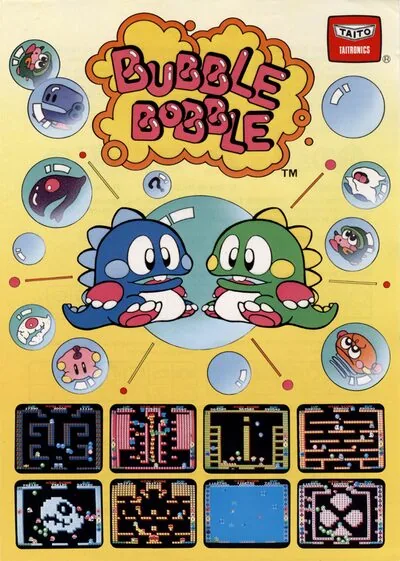

FBA (FinalBurn Alpha)
Bubble Bobble
- Año: 1986
- Desarrollador: Taito Corporation
- Género: Plataformas / Correr y saltar
- Jugadores: 2 jugadores
Bub y Bob, dos dragoncitos, atraviesan 100 niveles para rescatar a sus novias: atrapan a los enemigos en burbujas y las revientan para convertirlos en fruta. Pensado para jugar a dos, cooperando.
Controles
Dos botones.
| Panel | Juego |
|---|---|
 | Lanzar burbuja |
 | Saltar |
  | Empezar |
 | Meter una moneda |
+  | Salir del juego |
El panel en FBA (FinalBurn Alpha)

🔎 Dudas para mirar jugando (1)
Datos de la guía que las fuentes no aclaran: si los compruebas en la bartop, apúntalo en las pruebas.
- ¿A dos se juega a la vez o por turnos?
Argumento
Bub y Bob, dos dragones (uno verde y otro azul), tienen que rescatar a sus novias de un mundo llamado la Cueva de los Monstruos, atravesando 100 niveles.
Final: en el nivel 100 espera el jefe, Super Drunk. Si lo pasa un solo jugador, un mensaje dice que el juego no ha terminado de verdad: «ven aquí con tu amigo». Si lo pasan dos, se ve el final feliz: los hermanos vuelven a ser humanos y se reúnen con sus novias. Ese final trae un código que abre el modo Super; si se completa a dos jugadores, se descubre que Super Drunk, el jefe, eran los padres de los hermanos, controlados por alguien. Todos vuelven a la normalidad y se reencuentran.
Fuentes
Jugabilidad
- Tipo de juego: plataformas de Taito (1986), pensado para dos jugadores (el segundo entra echando otra moneda).
- Niveles: de una sola pantalla; si hay huecos en el suelo, caes y apareces por arriba.
- Burbujas: atrapa a los enemigos en burbujas y revienta las burbujas chocando con ellas. Cada enemigo se convierte en comida que da puntos; varios a la vez dan más.
- Burbujas especiales: de fuego, agua o rayo, para atacar a los enemigos.
- Saltar sobre burbujas: salen de la boca de los dragones y flotan un rato hasta que desaparecen o explotan solas; se puede subir encima para llegar a sitios altos o dar saltos enormes.
- Cooperar: los dos hermanos se ayudan: uno lanza burbujas para que el otro salte encima y llegue a sitios que solo no alcanzaría.
- Comida: cada enemigo vencido se convierte en fruta o dulces que hay que recoger en el mismo nivel; cuantos más a la vez, más puntos.
- Enemigos enfadados: si escapan de una burbuja o tardas mucho, se ponen rosas y más rápidos. Si tardas aún más, aparece un enemigo invencible que te persigue.
- Vidas: pierdes una al tocar un enemigo libre o sus proyectiles.
Fuentes
Guía de niveles
- 100 niveles, cada vez más difíciles; en el nivel 100, el jefe final.
- Atajo: si llegas al nivel 50 sin que ningún jugador pierda una vida, aparece un pasadizo que lleva al nivel 70.
- ⚠️ No he encontrado un longplay con los niveles marcados; el de «Vídeos» marca el jefe final y el final verdadero.
Fuentes
Objetos
| Objeto | Qué hace |
|---|---|
| Comida | Puntos; sale de cada enemigo vencido. |
| Burbujas de fuego, agua y rayo | Atacan a los enemigos al reventarlas. |
| Burbujas con letras E-X-T-E-N-D | Con las seis, una vida más y pasas de nivel al momento. |
| Zapatillas rojas | Correr más rápido |
| Caramelo rojo y blanco | Burbujas más lejos |
| Caramelo morado y azul | Burbujas más rápidas |
| Caramelo naranja y amarillo | Disparar burbujas más seguido |
| Lámpara azul | Puntos al moverse (solo en ese nivel) |
| Lámpara amarilla | Disparar más seguido y más lejos (solo en ese nivel) |
| Lámpara roja | Disparar más seguido, burbujas más rápidas y más lejos (solo en ese nivel) |
| Anillo azul / rojo | Puntos al moverse / al saltar |
| Cruz roja | Fuego en vez de burbujas: mata directamente |
| Cruz azul | Inunda el nivel y elimina a todos los enemigos (diamantes de 7.000; 6.000 si estaban en burbuja) |
| Cruz naranja | Rayos gigantes que cruzan la pantalla (diamantes de 8.000; plátanos de 500 si estaban en burbuja) |
| Reloj | Hay varios; uno para el tiempo: sin «Hurry up!» ni la ballena fantasma |
| Bomba | Diamantes de 10.000 (6.000 si estaban en burbuja) |
| Paraguas | Saltar niveles: naranja 3, rojo 5, morado 7 |
| Bastón | Al acabar el nivel cae una fruta o un dulce gigante, y todas las burbujas se convierten en lo mismo |
| Cofre | Al acabar el nivel cae un diamante gigante, y las burbujas se convierten en diamantes |
| Líquidos | Desaparecen los enemigos y la pantalla se llena de fruta |
Fuentes
Trucos y secretos
Lo marcado con ⚠️ no está probado en la bartop.
Secretos
- Salas secretas: si llegas a los niveles 20, 30 o 40 sin perder vidas, aparece una puerta pequeña a una sala secreta llena de diamantes de colores, con un mensaje cifrado que da una gran pista para acabar el juego. La sala sustituye al nivel siguiente: entrando en la del 20 se juega en el 21 y se sale al 22 (así se saltan el 21, el 31 y el 41).
- Atajo al 70: llegar al nivel 50 sin perder vidas abre un pasadizo al nivel 70.
- Finales: uno a un jugador (incompleto), el final feliz a dos y, con el código de ese final, el modo Super y su segundo final feliz.
- El J2 ayuda: las puertas secretas dejan de salir cuando el J1 pierde su primera vida; el J2 puede arriesgarse por él.
Trucos en la pantalla del título (⚠️ sin probar)
Las runas de las salas secretas se traducen como izquierda, derecha, arriba, abajo, saltar y disparar. Con el logo grande en amarillo, antes de meter moneda:
- Zapatillas y caramelos toda la partida: izquierda, saltar, izquierda, 1P, izquierda, disparar, izquierda, 1P.
- Puertas secretas aunque se pierdan vidas: disparar, saltar, disparar, saltar, disparar, saltar, derecha, 1P.
- Otra secuencia hace salir una palanca para elegir entre Bubble Bobble y Super Bubble Bobble.
Truco de los puntos (⚠️ sin probar)
Si al acabar un nivel la puntuación de un jugador termina en dos cifras iguales seguidas de un cero o de tres ceros (por ejemplo, 55.110 o 53.000), todas las burbujas explotan y se convierten en fruta o dulces, distintos según las cifras. Se consigue disparando y reventando burbujas contra una pared.
Iniciales del récord (⚠️ sin probar)
Al apuntar el récord, algunas iniciales dan un objeto en la partida siguiente: KTT (cerveza), STR (flamenco), TAK (pulpo), KIM (refresco).
Fuentes
Longplay

Partida completa de la recreativa, sin morir y con el final verdadero (45 min), de Penta video: Bubble Bobble (Arcade) Full game complete (true ending) 🕹️ No deaths - No cheats - HD 60fps.
Pulsa el minuto de un nivel para ver el vídeo desde ese punto.